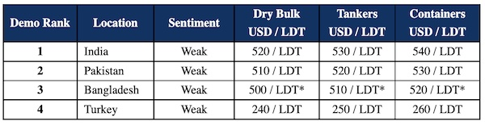

inWeekly Demolition Reports13/12/2022

After the last few weeks of insufferable performances from the major recycling markets, a shade of positivity was observed this week, as Owners seem more confident in testing the waters and welcoming firm offers, especially those that are above USD 500/LDT.
On the back of this seemingly positive note, one or two market sales of note even materialized this week and it does seem as though prices have bottomed out and sentiments have flatlined after losing a rather rattling USD 200/LDT, seen from the peaks witnessed earlier this year.
Bangladesh continues to struggle with L/C financing limits, but the IMF loan is reportedly in the works of being approved and with most yards currently lying empty, we expect demand and consequently prices to come back, especially once some liquidity is injected back into the domestic market.
Pakistan remains utterly tentative on new purchases, so significant have the falls been so far this year on both the currency and steel prices.
On the West End, Turkey remains buoyant at its terrible lows, with marginal (at best) improvements in fundamentals being the only news emanating from this market anymore.
As such, the market of the moment continues to be India and despite a few of HKC units also working, nearly all Cash Buyer ‘as is’ sales are being presently finalized with an Alang resale in mind.
It still remains a mystery whether it may be a slightly busier end to the year than many had been anticipating, especially with further sales likely to take place to a more settled and confident Indian sub-continent recycling market.
Once the currency situation starts to stabilize in Pakistan and funds start to become more readily available in Bangladesh, then we really could see prices push on.
For week 49 of 2022, GMS demo rankings / pricing for the week are as below.

📄 Download PDF: Ship-recycling-market-insight-week-49-2022-Testing-the-Waters.pdfSource: GMS,Inc. ,https://www.gmsinc.net/gms_new/index.php/web